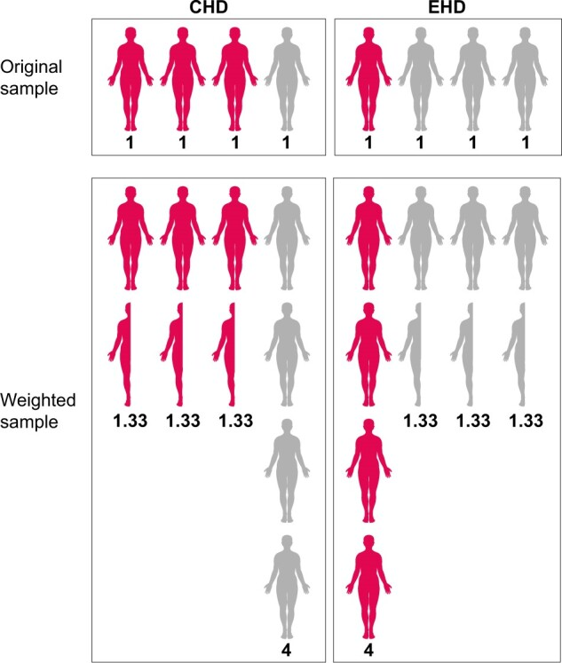

36 Inverse probability of treatment weighting (IPTW) with baseline covariates
Names: * Inverse probability weighting (IPW) * Inverse probability of treatment weighting (IPTW) * Propensity score weighting
IPTW is one of the various propensity score methods. Below describes IPTW to account for confounders at baseline, but it can be used to: * Estimate parameters of a marginal structure model and adjust for confounding measured over time (see page on G-methods). * Account for informative censoring (pateitsn censored when lost to follow-up or reach study end without encountering event) - calculating inverse probability of censoring weights or each time point as the inverse probability of remaining in the study up to the current time point, given the previous exposure, and patient characteristics related to censoring [Chesnaye et al. 2022]
IPTW involves using the propensity scores to balance the baseline characteristics in the treated and untreated (or ‘exposed and unexposed’) groups. This is done by weighting each individual by the inverse probability of receiving their actual treatment. [Chesnaye et al. 2022]
| Actual group | Estimated probability of being in this group | Inverse |
|---|---|---|
| Exposed / Treated | propensity_score |
1/propensity_score |
| Unexposed / Untreated | 1-propensity_score |
1/(1-propensity_score) |
This means that larger weights go to: * Exposed individuals with a lower probability of exposure * Unexposed individuals with a higher probability of exposure
Conceptually, IPTW can be considered mathematically equivalent to standardisation.
As IPTW aims to balance patient characteristics in the exposed and unexposed groups, it is considered good practice to assess the standardized differences between groups for all baseline characteristics both before and after weighting. The advantage of checking standardized mean differences is that it allows for comparisons of balance across variables measured in different units. As a rule of thumb, a standardized difference of <10% may be considered a negligible imbalance between groups. If the standardized differences remain too large after weighting, the propensity model should be revisited (e.g. by including interaction terms, transformations, splines). [Chesnaye et al. 2022]
36.1 Example
- Study on receiving extended-hours haemodialysis (EHD) treatment v.s. conventional HD (CHD)
- Want to balance distribution of diabetes - at baseline, higher % diabetes patients in CHD group than in EHD group
- Patients with diabetes have 25% probability of receiving EHD = propensity score of 0.25
- To balance distribution, weight-up patients in EHD group by inverse of propensity score, which is 1/0.25=4, so conceptually each EHD diabetes patient represents four patients, creating a “pseudo-population”
- Similarly, CHD diabetes patients weighted by 1/(1-0.25)=1.33.
- Diabetes now equally distributed across the EHD and CHD groups
- These weights can then be incorporated into an outcome model to get an estimate of the average treatment effect adjusted for confounders
‘As the weighting creates a pseudopopulation containing ‘replications’ of individuals, the sample size is artificially inflated and correlation is induced within each individual. This lack of independence needs to be accounted for in order to correctly estimate the variance and confidence intervals in the effect estimates, which can be achieved by using either a robust ‘sandwich’ variance estimator or bootstrap-based methods.’ [Chesnaye et al. 2022]
| Diabetes + Group | Estimated probability of EHD (given diabetes status) |
Estimated probability of actual treatment received |
Inverse |
|---|---|---|---|
| Diabetes + CHD | 0.25 | 0.75 | 1/0.75 = 1.33 |
| No diabetes + CHD | 0.75 | 0.25 | 1/0.25 = 4 |
| Diabetes + EHD | 0.25 | 0.25 | 1/0.25 = 4 |
| No diabetes + EHD | 0.75 | 0.75 | 1/0.75 = 1.33 |
Image from Chesnaye et al. 2022:

36.2 Strengths and limitations
Strengths: * (As for all propensity score-based methods) able to summarise all characteristics in a single covariate * Retains more individuals than propensity score matching * Can be used for categorical or continuous exposures (whilst matching generally compares a single treatment group with a control group) * Estimates hazard ratios with less bias than propensity score stratification or adjustment using the propensity score * Can be used in marginal structural models to correct for time-dependent confounders
Limitations: * Simulation studies have shown IPTW can be no better than multivariable regression * IPTW cautioned against for sample sizes under 150 due to underestimation of the variance (i.e. standard error, confidence interval and P-values) of effect estimates * ‘Sensitive to misspecifications of the propensity score model, as omission of interaction effects or misspecification of functional forms of included covariates may induce imbalanced groups, biasing the effect estimate’ [Chesnaye et al. 2022] * ‘Propensity values near 0 and 1 yield extreme weights (after taking the inverse)’[source] - i.e. not recommended when propensities are small (close to 0) as weights can be unstable * ATE may not always be the sensible estimand [source]
36.3 Assumptions
‘Treatment effects obtained using IPTW may be interpreted as causal under the following assumptions: * Exchangeability * No misspecification of the propensity score model * Positivity * Consistency’ [Chesnaye et al. 2022]
36.4 IPTW variants
One of the limitations described above is that propensity values near 0 and 1 yield extreme weights. This can ‘inflate the variance and confident intervals of the effect estimate. This may occur when the exposure is rare in a small subset of individuals, which subsequently receives very large weights, and thus have a disproportionate influence on the analysis.’ It’s worth considering why these individuals have such a low probability of being treatment but actually receive the treatment, or vice versa - they may be outliers. For example, ‘patients with a 100% probbaility of receiving a particular treatment would not be eligible to be randomised to both treatments’. There are variants to IPTW that attempt to address some of its limitations. [Chesnaye et al. 2022]
36.4.1 Weight stabilisation
- Replace ‘numerator (which is 1 in the unstabilized weights) with the crude probability of exposure (i.e. given by the propensity score model without covariates).’
- ‘In case of a binary exposure, the numerator is simply the proportion of patients who were exposed. Stablised weights can therefore be calculated as:’
exposed / propensity_score, instead of1 / propensity_scoreunexposed / (1-propensity score), instead of1 / (1-propensity score)
- ‘Stabilized weights should be preferred over unstabilized weights, as they tend to reduce the variance of the effect estimate’ [Chesnaye et al. 2022]
In other weights, weight stabilisation invovles multiplying the unstabilised weight by the probability of the observed exposure without conditioning on the confounders, and so it the stablised weight is the ‘ratio of the unconditional probability (the numerator) to the conditional probability (the denominator)’.[Xie et al. 2017]
36.4.2 Propensity score trimming and truncation
- Symmetric trimming - exclude patients with a score outside [a, 1-a], with often a=0.1, so [0.1, 0.9] [source] - typically 1st and 99th percentiles, but lower thresholds can reduce variance [Chesnaye et al. 2022]
- Asymmetric trimming - exclude patients with a score outside the common range formed by the treated and control patients, and below the q quantile of treated and above the 1-q quantile of control
- Propensity score truncation - set patients with a score below a to a, and above 1-a to 1-a [source]
‘Truncating weights change the population of inference and thus this reduction in variance comes at the cost of increasing bias’. [Chesnaye et al. 2022]
36.4.3 Augmented inverse propensity weighting (AIPW)
Augmented inverse propensity weighting (AIPW) involves: 1. Fitting a propensity score model (i.e. estimated probability of treatment assignment conditional on baseline characteristics) 2. Fit two seperate models that estimate the outcome - one under treatment and one under control 3. Weight each outcome by the propensity scores
This improves on IPW to combine information about the probability of treatment and predictive information about the outcome variable. It is a doubly robust estimator / has the property of double robustnesss. This means ‘that it is consistent (i.e., it converges in probability to the true value of the parameter) for the ATE if either the propensity score model or the outcome model is correctly specified’.
AIPW is more flexible as it doesn’t require the same set of covariates to be used for the propensity score model and model estimaing treatment-outcome relationship. [Kurz 2022]
36.4.4 Excluding treated individuals
Pajouheshnia et al. 2017 propose to exclude treated individuals after IPTW - i.e. stratifying the sample but focussing only on untreated - so that the resulting validation set resembles the untreated target population. [Pajouheshnia et al. 2017] This is proposed in the context of the treatment paradox, with the intention of finding the direct effect of the exposure on outcome not mediated by treatment.
In their simulation study, Pajouheshnia et al. 2017 find that IPW alone did not improve calibration (compared to when we did nothing to account for the treatment paradox), but IPW followed by the exclusion of treated individuals provided correct estimates for calibration. IPW alone or followed by the exclusion of treated individuals improved estimates of the c-index in all scenarios where the assumptions of positivity and no unobserved confounding were met. In scenario 4, where treatment allocation was determined by a strict risk-threshold and thus the assumption of positivity was violated, IPW was ineffective, and resulted in the worst estimates of discrimination across all methods. In addition, the extreme weights calculated in scenario 4 led to very large standard errors. In scenarios 13–15, the presence of an unobserved confounder led to the failure of IPW to provide correct estimates of the c-index. Weight truncation at the 98% percentile increased precision, but was less effective in correcting of the c-index for the effects of treatment.
‘Although the use of IPW prior to the exclusion of treated individuals is a promising solution in data where treatments are non-randomly allocated, it should not be used when there are severe violations of the underlying assumptions, e.g. in the presence of non-positivity (where some individuals had no chance of receiving treatment), or when there is an unobserved confounder, strongly associated with both the outcome and treatment use. There is thus a need to explore alternative methods to IPW to account for the effects of treatment use when validating a prognostic model in settings with non-random treatment use.’ [Pajouheshnia et al. 2017]